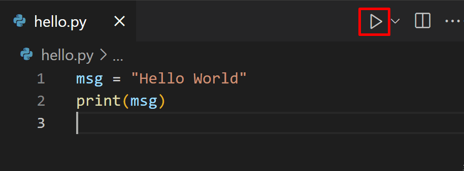
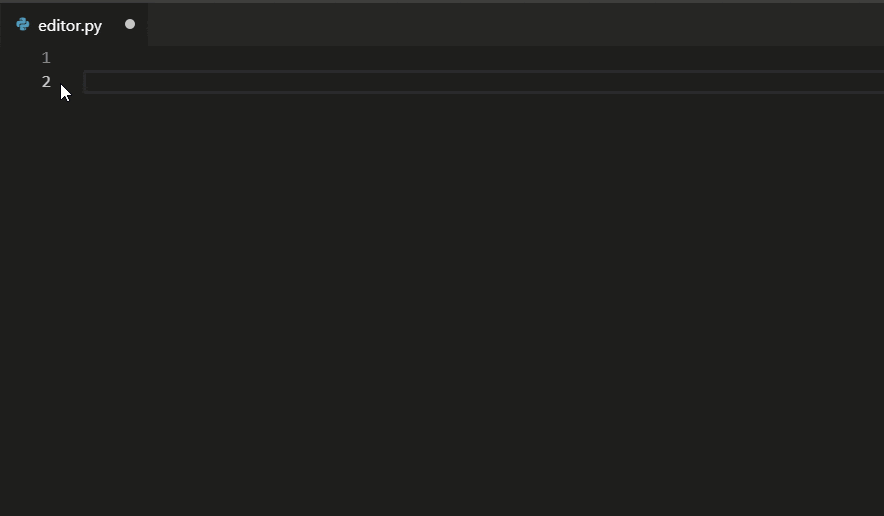
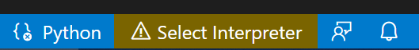
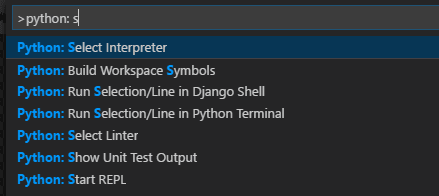
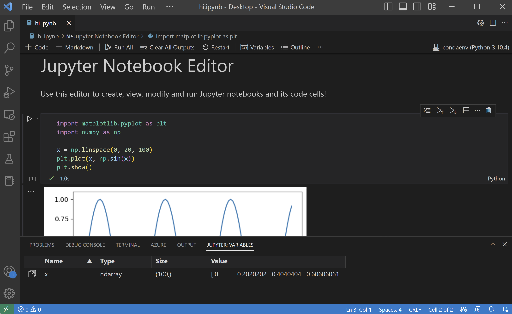
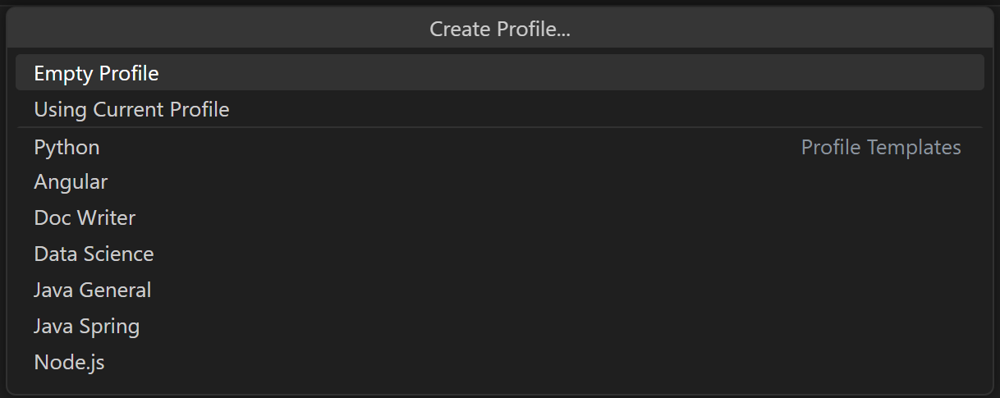

Visual Studio Code 中的 Python
在 Visual Studio Code 中使用 Microsoft Python 扩展来编写 Python 代码，简单、有趣且高效。该扩展使 VS Code 成为一个出色的 Python 编辑器，可在任何操作系统上与多种 Python 解释器配合使用。它充分利用了 VS Code 的所有功能，提供自动补全和 IntelliSense、代码检查、调试和单元测试，同时还能轻松地在 Python 环境之间切换，包括虚拟环境和 conda 环境。
本文仅概述了 VS Code Python 扩展的不同功能。如需逐步了解如何编辑、运行和调试代码，请使用下方按钮。
安装 Python 及 Python 扩展
教程将指导您完成 Python 的安装和使用该扩展。您必须独立于扩展自行安装一个 Python 解释器。如需快速安装，请使用 python.org 提供的 Python 并从 VS Code 市场安装该扩展。
>注意：为了帮助您开始 Python 开发，您可以使用 Python 配置文件模板，它包含了有用的扩展、设置和 Python 代码片段。
安装好某个版本的 Python 后，使用Python: 选择解释器命令来选择它。如果 VS Code 未能自动找到您需要的解释器，请参考环境 - 手动指定解释器。
您可以通过设置来配置 Python 扩展。更多信息请参阅 Python 设置参考。
>适用于 Linux 的 Windows 子系统：如果您使用的是 Windows，WSL 是进行 Python 开发的绝佳方式。您可以在 Windows 上运行 Linux 发行版，而 Python 通常已预装其中。配合 WSL 扩展使用时，您可以在 WSL 环境中获得完整的 VS Code 编辑和调试支持。要了解更多信息，请访问在 WSL 中开发或尝试在 WSL 中工作教程。
运行 Python 代码
要体验 Python，请创建一个文件（使用文件资源管理器），命名为 hello.py，并粘贴以下代码：
print("Hello World")然后，Python 扩展会提供快捷方式，使用当前选定的解释器（命令面板中的 Python: 选择解释器）来运行 Python 代码。要运行当前的 Python 文件，请点击编辑器右上角的运行 Python 文件播放按钮。

您也可以使用 Python: 在 Python 终端中运行选中内容/行 命令 (kbstyle(Shift+Enter)) 来运行单行或某段代码。如果没有选中内容，智能发送将把光标所在行周围的最小可运行代码块发送到 Python 终端 (kbstyle(Shift+Enter))。编辑器中选定内容的上下文菜单中也提供了一个相同的运行 Python > 在 Python 终端中运行选中内容/行命令。每次在终端/REPL 中运行选中内容或某行代码时，都会使用同一个终端，直到该终端被关闭为止。在终端中运行 Python 文件也使用同一个终端。如果该终端仍在运行 REPL，您应该先退出 REPL（exit()）或切换到另一个终端，然后再运行 Python 文件。
Python 扩展会根据选中内容中第一个非空行自动去除缩进，根据需要将所有其他行左移。
该命令会在必要时打开 Python 终端；您也可以使用 Python: 启动终端 REPL 命令直接打开交互式 REPL 环境，该命令会使用当前选定的解释器激活终端，然后运行 Python REPL。
如需更具体的分步说明及其他运行代码的方式，请参阅运行代码教程。
自动补全和 IntelliSense
Python 扩展支持使用当前选定的解释器进行代码补全和 IntelliSense。IntelliSense 是多个功能的总称，包括跨所有文件以及对内置和第三方模块的智能代码补全（上下文相关的方法和变量建议）。
在您输入时，IntelliSense 会快速显示方法、类成员和文档。您也可以随时使用 kb(editor.action.triggerSuggest) 来触发补全。将鼠标悬停在标识符上会显示更多相关信息。

通过 AI 增强补全
GitHub Copilot 是一款 AI 驱动的代码补全工具，可帮助您更快、更智能地编写代码。您可以在 VS Code 中使用 GitHub Copilot 扩展来生成代码，或从它生成的代码中学习。

GitHub Copilot 为 Python 之外的多种语言及框架提供建议，包括 JavaScript、TypeScript、Ruby、Go、C# 和 C++。
您可以在 Copilot 文档中了解更多关于如何开始使用 Copilot 的信息。
代码检查
代码检查会分析您的 Python 代码以发现潜在错误，让您能够轻松定位并修正各种问题。
Python 扩展可以应用多种不同的代码检查工具，包括 Pylint、pycodestyle、Flake8、mypy、pydocstyle、prospector 和 pylama。请参阅代码检查。
调试
告别 print 语句调试！VS Code 通过 Python 调试器扩展提供了强大的 Python 调试支持，允许您设置断点、检查变量，并使用调试控制台深入了解程序如何逐步执行。可调试多种不同类型的 Python 应用程序，包括多线程、Web 和远程应用程序。
有关 Python 调试的更多具体信息，例如配置 launch.json 设置和实现远程调试，请参阅调试。VS Code 调试的通用信息请参阅调试文档。
此外，Django 和 Flask 教程提供了在 Web 应用程序的上下文中实现调试的示例，包括调试 Django 模板。
环境
Python 扩展会自动检测安装在标准位置的 Python 解释器。它还能检测 conda 环境以及工作区文件夹中的虚拟环境。请参阅配置 Python 环境。
当前环境显示在 VS Code 状态栏的右侧：

状态栏还会在未选择解释器时进行提示：

选定的环境会用于 IntelliSense、自动补全、代码检查、格式化以及任何其他与语言相关的功能。当您在终端中运行或调试 Python 时，或者使用终端: 创建新终端命令创建新终端时，该环境也会被激活。
要更改当前解释器（包括切换到 conda 或虚拟环境），请点击状态栏上的解释器名称，或使用 Python: 选择解释器命令。

VS Code 会向您显示一个列表，列出已检测到的环境以及您手动添加到用户设置中的环境（参见配置 Python 环境）。
Jupyter 笔记本
要在 VS Code 中为 Jupyter 笔记本文件（.ipynb）启用 Python 支持，您可以安装 Jupyter 扩展。Python 和 Jupyter 扩展协同工作，为您在 VS Code 中提供出色的笔记本体验，允许您直接查看和修改代码单元格，并提供 IntelliSense 支持，以及运行和调试它们。

您还可以通过 Jupyter: 导出为 Python 脚本命令将笔记本转换并以 Python 代码文件的形式打开。笔记本的单元格在 Python 文件中以 #%% 注释分隔，Jupyter 扩展会显示运行单元格或运行下方 CodeLens。选择任一 CodeLens 都会启动 Jupyter 服务器并在 Python 交互窗口中运行相应的单元格：

您还可以连接到远程 Jupyter 服务器来运行笔记本。有关更多信息，请参阅 Jupyter 支持。
测试
Python 扩展支持使用 Python 内置的 unittest 框架和 pytest 进行测试。
要运行测试，您必须在项目的设置中启用一个受支持的测试框架。每个框架都有其特定的设置，例如用于标识测试发现路径和模式的参数。
一旦测试被发现后，VS Code 会提供各种命令（在状态栏、命令面板和其他位置）来运行和调试测试。这些命令还允许您运行单个测试文件和方法。
配置
Python 扩展为其各种功能提供了丰富的设置。这些设置在其相关主题中有详细说明，例如编辑代码、代码检查、调试和测试。完整列表请参阅设置参考。
Python 配置文件模板
配置文件让您可以根据当前项目或任务快速切换扩展、设置和 UI 布局。为了帮助您开始 Python 开发，您可以使用 Python 配置文件模板，这是一个精心策划的配置文件，包含有用的扩展、设置和代码片段。您可以直接使用该配置文件模板，也可以将其作为起点，根据您自己的工作流进一步自定义。
您可以通过配置文件 > 创建配置文件... 下拉菜单选择配置文件模板：

选择配置文件模板后，您可以查看设置和扩展，并移除不想包含在新的配置文件中的个别项目。基于模板创建新配置文件后，对设置、扩展或 UI 所做的更改都会保存在您的配置文件中。
其他流行的 Python 扩展
Microsoft Python 扩展提供了本文前面所述的所有功能。通过安装其他流行的 Python 扩展，可以为 VS Code 添加额外的 Python 语言支持。
- 打开扩展视图 (
kb(workbench.view.extensions))。 - 输入 'python' 来筛选扩展列表。
上方显示的扩展是动态查询的。点击上方的任一扩展磁贴，阅读其描述和评论，以决定哪个扩展最适合您。更多信息请参阅市场。
后续步骤
- Python Hello World 教程 - 开始在 VS Code 中使用 Python。
- 编辑 Python 代码 - 了解 Python 的自动补全、格式化和重构。
- 基本编辑 - 了解强大的 VS Code 编辑器。
- 代码导航 - 在源代码中快速移动。
- Django 教程
- Flask 教程